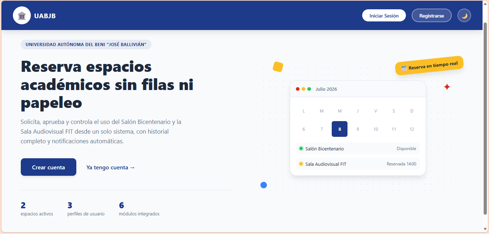
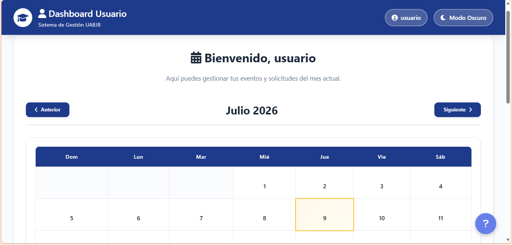
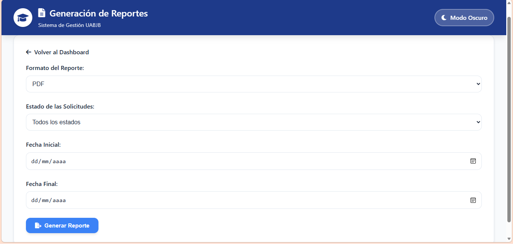

04 · Proyectos
Lo que he construido
Completado
Proyecto Académico



Sistema académico institucional
Desarrollo del ciclo completo de un sistema de gestión para el instituto tecnológico. Funciones implementadas para la inscripción de estudiantes, seguimiento de calificaciones e informes.